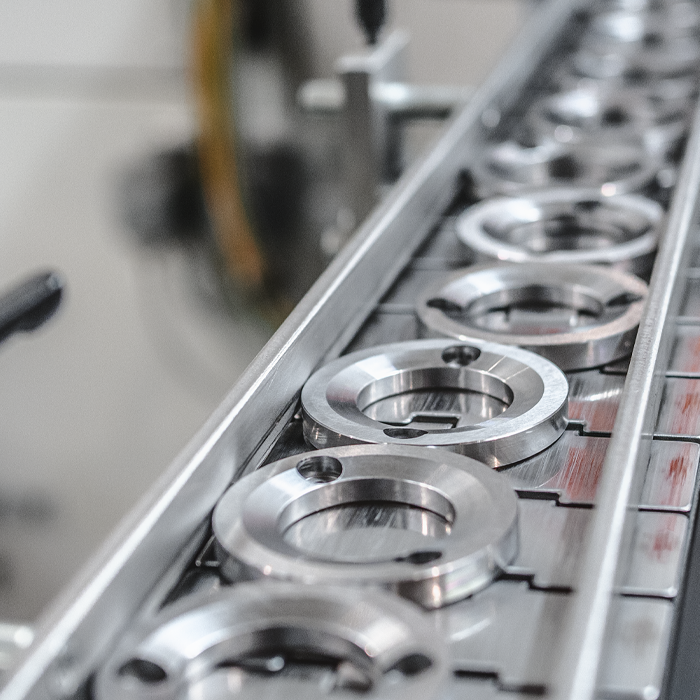
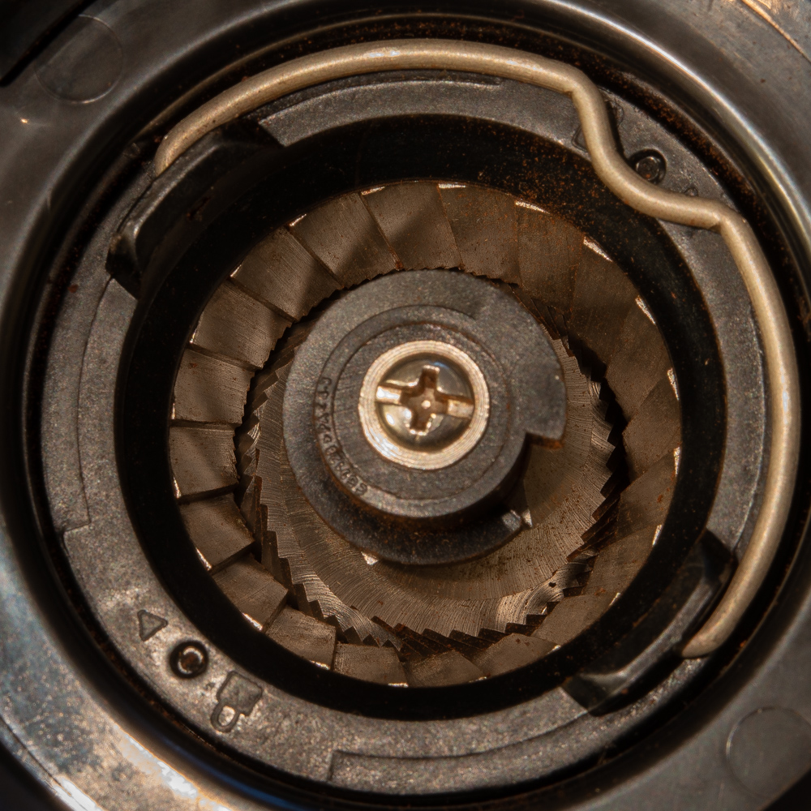

平刀由兩片近乎平行的圓盤刀盤構成，一片固定、一片旋轉。咖啡豆進入中央後，經不同區域的刀齒逐步破碎與切削，再由外緣排出。
主要特性
- 刀盤呈圓盤狀並相對排列。
- 優良設計可形成較集中的粒徑分布。
- 常呈現清晰、明亮與風味分離度。
- 手沖、批次沖煮及義式磨豆機皆常見。
注意事項
- 高速或連續研磨時可能累積熱量。
- 刀盤平行度與同心度會影響均勻度。
- 不同齒形的風味差異可能非常大。
- 部分機型殘粉與噪音較明顯。
風味清晰層次分離粒徑集中
認識平刀、錐刀與鬼齒刀的結構、研磨特性、風味傾向與適用沖煮方式。
磨盤會把咖啡豆切削、破碎成不同大小的顆粒。粒徑分布會影響水流、萃取速度、口感與風味清晰度；實際結果同時受到刀齒幾何、刀徑、轉速、校正與咖啡豆狀態影響。

平刀由兩片近乎平行的圓盤刀盤構成，一片固定、一片旋轉。咖啡豆進入中央後，經不同區域的刀齒逐步破碎與切削，再由外緣排出。

錐刀由內部圓錐刀與外部環形刀組成。咖啡豆由上方進入，受到重力與螺旋刀齒帶動，逐步破碎、切削後由下方排出。

「鬼齒刀」是市場對某類粗大、深齒、交錯式刀盤的通稱。其研磨通常偏向先破碎再切削，常用於濾泡導向與中粗研磨。
| 比較項目 | 平刀 | 錐刀 | 鬼齒刀 |
|---|---|---|---|
| 基本結構 | 兩片圓盤狀刀盤 | 內錐刀＋外環刀 | 粗大、深齒、交錯式刀形 |
| 常見風味印象 | 清晰、明亮、層次分離 | 飽滿、融合、甜感與厚度 | 平衡、順口、甜感清楚 |
| 常見用途 | 手沖、批次沖煮、義式 | 手沖、義式、法壓等全方位 | 手沖、法壓、冷萃與中粗研磨 |
| 選購重點 | 齒形、刀徑、平行度與轉速 | 刀徑、同心度與調整機構 | 粗細範圍、原廠用途與零件取得 |